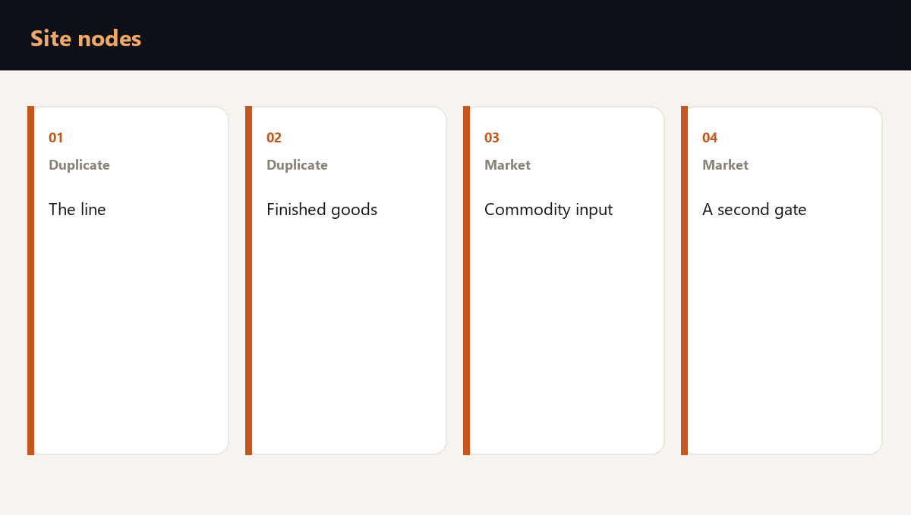

A single point of failure on a site is the node that wipes out a day of output or shipping: the line, the finished-goods store, the flow of raw material, or the only gate. A market replacement the next day and duplication with spatial separation solve different nodes.

The four nodes a day stands on
The owner starts from a map of the site. The map asks four questions: what the line produces, where finished goods wait to ship, where raw material comes from, and which gate the site lives through.
Each node has a day-cost: shipments not made, people and rent that continue, a penalty under the supply contract, and the cost of returning to the previous output. The method is already set out in the cost of a day of downtime. Here the same sum is tied to a site node.
| Node | If it stops | What the owner does |
|---|---|---|
| Line | A day of output | Duplicates the route or the shift |
| Finished-goods store | A day of shipping | Keeps a reserve on a second site |
| Commodity raw material | The restart after a pause | Buys it on the market |
| The only gate | The whole site | Prepares a second intake |
What the market covers the next day
Commodity raw material, standard packaging, a neighbouring warehouse for rent and a hired shift exist on the market in quantity. Losing them hurts for hours, and a reserve or a cover contract brings the flow back.
What is unique is the recipe, the tooling, the only line with a long changeover, the customer store tied to one contract, and the person without whose signature a shipment does not leave. Those are the candidates for duplication, separation or a written deputy.
- Market: raw material, packaging, a warehouse for rent, a shift.
- Unique: tooling, the recipe, the only line, the authority to release a shipment.
- Test: if a node cannot be bought in a day, it has a pair somewhere else.
- The sum: the day-cost of that node is written before the event.
What the readiness check calculates
The check splits the site into these nodes, names the single points of failure, prices the day of downtime and the cost of restoring output, and assigns who stops the shift and who writes to the supplier. That is the work of the drone strike readiness check.
A net and a canopy over the yard cover the first physical step. The second step belongs to the owner: the node map, the day-cost and the decision of what to duplicate.
Frequently asked questions
With the three flows the company cannot live a day without: output, shipping, raw material in. Each flow gets one question: what exactly stops it.
A reserve is a quantity that sits nearby and runs out. Duplication is a second way to do the same work when the first way is unavailable, better in another place.
That is when it is needed. One site means the gate, the line and the store coincide in one point. The map shows which of the three to separate first.
Is your team ready for the first hour of a crisis?
You test a plan by running a scenario. Reading it is not enough. The assessment shows the gaps, and the corporate format works through them with your team on your own processes.